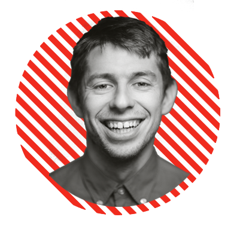
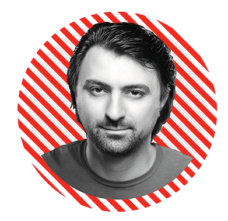
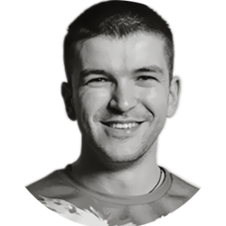
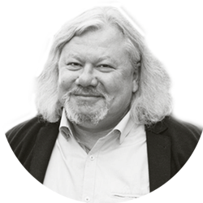

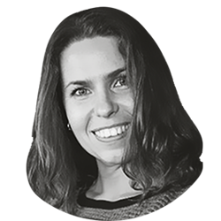
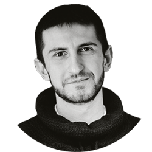
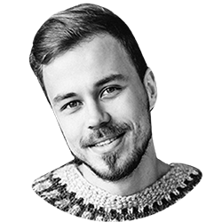
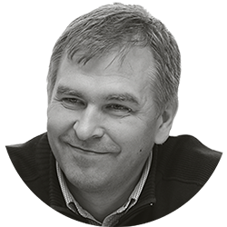
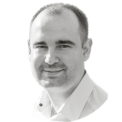
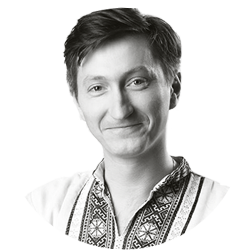
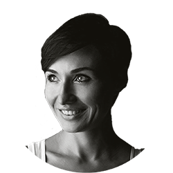
Олексій Малицький
«Локальний vs Провінційний»
Один із найцікавіших молодих підприємців в Україні. Хлопець є співзасновником Sammy Icon, Morza, Clan-P, One Factory, 5000 Miles та консультантом багатьох компаній із питань брендингу. Автор лекцій «Як почати бізнес в четвер».Олексій є постійним гостем різноманітних форумів і конференцій, тому цілком ймовірно, що ви вже бачили записи його лекцій. Але, будьте певні, що наживо його виступи «заряджають» набагато більше.
Назар Шимоне-Давида
«Нова еко-система для електромобіля»
Співзасновник Tesla Club Ukraine Cпівзасновник українсько-норвезької компанії Вільний простір майбутнього Carpoint Toма-U.Теза від Назара:
"По нашим підрахункам в Україні вже 3-4 тис електромобілів. Тобто 3-4 тис людей зробили свідомий вибір і пересіли на електромобілі. Один електромобіль в середньому не спалює 2 т пального за рік, тобто 6-8 тис тон пального не спалено, як ви думаєте це багато чи мало?
Андрій Демчук
«Досягти неможливого»
Молодий львівський науковець та досвідчений фехтувальник.У 2016 році паралімпійський чемпіон-шабліст привіз «золото» з Ріо-де-Жанейро, а свою перемогу присвятив українським воїнам, що загинули в АТО.
Про свою історію успіху, а також про перемоги всупереч обставинам Андрій розповість на TEDxLviv.
Марк Зархін
«Креативне місто. Львів?»
Голова Ради директорів ресторанної групи Fast Food Systems, директор ресторанної групи Kumpel group.Марк поділиться своїм баченням на те, як зосередити зусилля громади і влади міста на розвитку і концентрації креативного класу у Львові, місті, яке має амбіції мати не тільки національні, але й глобальні впливи.
Микола Береза
«Театр. Територія на межі»
Директор та актор Львівського театру ім. Леся Курбаса, кіноактор, учасник гурту «Курбаси»Закінчив ЛНУ імені Івана Франка, факультет культури і мистецтв, акторський курс у 2005 році, а згодом режисерський курс Володимира Кучинського. Мав стати священиком, прислуговував у церкві. Одночасно працював диджеєм
Мабуть найемоційніший виступ, якого ми всі чекаємо.
Ірина Миронова
«Як я докотилася до Zero Waste Lviv»
Громадський активіст, ініціатор руху Zero Waste LvivІдеї, які вона вкадає у свою розповідь не просто надихають і варті поширення, а є, на нашу думку, обов'язковими до втілення у життя.
За освітою еколог, закінчила Могилянку, навчалась також в США на програмі з екополітики. Працює в сфері корпоративної соціальної відповідальності, екоменеджменту та сталого розвитку.
Алім Алієв
«Від мрії до arzu»
Громадський активіст і менеджер освітньо-культурних проектів.Після окупації Криму разом із друзями Алім заснував громадську організацію «КримSOS», а пізніше — кримськотатарський культурний центр «Кримський дім у Львові».
Алім розповість про Крим, волонтерство і про свою велику мрію
Дмитро Корнелюк
«Гумор, як соціальний клей»
Стендап-комік, резидент Lviv City Stand UpБез гумору — будь-яка комунікація між людьми автоматично стає не дуже цікавою та рутинною. Навряд чи є сфера у житті людини, де здорове почуття гумору це зайва опція. ПОЧУТТЯ ГУМОРУ — це м’яз, котрий можна і треба тренувати
Дмитро Корнелюк займається гумором понад 10 років і саме під час його виступу ви зможете прокачати себе в гуморі.
Ярослав Притула
«Архітектура освітніх можливостей»
Питання освіти в сучасній Україні стоїть дуже гостро і ця тема обов'язково мала бути на майбутній конференції.Ярослав Притула - декан факультету прикладних наук Українського католицького університету.
Він розповість про освітні процеси і про складний вибір освітнього шляху в житті студента.
Олександр Конотопський
«На шляху до глобальних баталій»
Всупереч тенденції просто перепродавати комплектуючі з Китаю Олександр вирішив розвивати виробництво в Україні.«Як відрізняються п’ятсот доларів з Австралії за власний продукт та мільйон доларів виручених із перепродажу?»
Відповідь на це запитання Олександр, засновник «AJAX Systems», знає з власного досвіду.
Фионг Ань Чан
«Апельсинова теорема»
У 17 років надзвичайна українка розв'язала складну математичну задачу і стала переможницею конкурсу молодих учених Intel ISEF у категорії «Математика».Наймолодша доповідачка конференції TEDxLviv "Думай глобально, дій локально" розповість про фігурні числа і про те, як припинити гризти граніт науки та насолоджуватись апельсиновою математикою.
Юрій Бугай
«Реформи як стартап»
Координатор проекту eHealth, Transparency International Ukraine, який ставить за мету запровадити електронну охорону здоров’я в Україні. Один із координаторів реформи публічних закупівель ProZorro.Юрій переконаний: для втілення реформ в Україні можна застосовувати логіку стартапу, яка дозволяє рухатися до візії із гнучкістю до зовнішніх обставин.
Наталя Моголівець
«Йога - мистецтво життя»
Наталія є інструктором із йоги із 13-річним досвідом і очолює львівське відділення «Української Федерації Йоги».На конференції ми разом спробуємо прислухатися до життя й побачити те, чого часто не помічаємо.